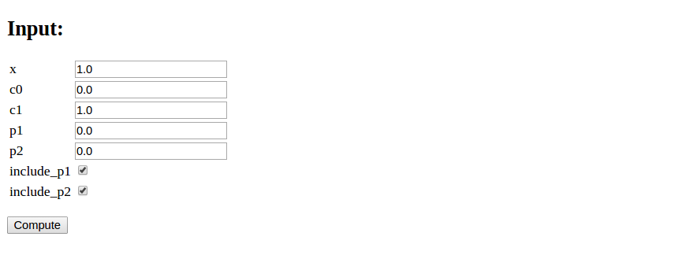
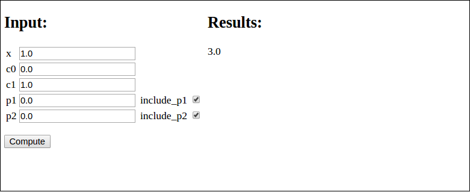

Exercises
Exercise 1: Make a web app for integration
The purpose of this exercise is to use Parampool to generate a
simple web application for integrating functions: \( \int_a^bf(x)dx \).
Provide a symbolic expression for \( f(x) \) and the limits \( a \) and \( b \)
as input. The application first attempts to
compute the integral \( \int f(x)dx \) symbolically using sympy,
without limits.
If that does not succeed, it computes \( \int_a^b f(x)dx \)
numerically by the, e.g., Trapezoidal rule.
The compute function should return nicely typeset formula for
the integrand (use sympy.latex) and also the result in case of
symbolic integration.
The relevant sympy code needs to turn the string expression
for \( f(x) \) into a valid Python function. This can be done with
the sympify and lamdify utilities. Given some string s
containing an expression, e.g., s = 'x*sin(x)', the following code
makes a sympy expression and a valid Python function f(x): return x*sin(x):
import sympy as sym
expr = sym.sympify(s)
x = sym.Symbol('x')
f = sym.lambdify([x], expr)
Using these constructions, the following function tries to integrate symbolically and then numerically if necessary:
def integrate(string_expression, a, b):
assert isinstance(string_expression, str)
import sympy as sym
expr = sym.sympify(string_expression)
x = sym.Symbol('x')
I = sym.integrate(expr, x)
if isinstance(I, sym.Integral):
# Did not succeed to integrate symbolically
f = sym.lambdify([x], expr) # Python function
I = trapezoidal(f, a, b, n=100)
else:
I = sym.latex(I) # make LaTeX expression
return expr, I # str if symbolic, float if numerical integr.
Filename: integrate.
Exercise 2: Make a web app for plotting data
Make a web app with the parampool.pool.Pool functionality
for uploading a file with columns of data and plotting
columns 2, 3, and so forth against column 1.
Use the file widget to provide the name of the data file in the
input. Use numpy.loadtxt
to easily load the data from file.
Filename: upload_and_plot.
Exercise 3: Make a web app for studying vibrations
Download the bumpy for simulating vibrating mechanical systems governed by the differential equation $$ \begin{equation} mu'' + f(u') + s(u) = F(t). \tag{4} \end{equation} $$
a) Make an interface to the bumpy application where the user can set the following items.
- Subpool ``Main``:
- \( m \)
- damping type: linear \( f(u')=bu' \) or quadratic \( f(u')=b|u'|u' \) (option list)
- damping parameter \( b \)
- subpool "spring"
- subpool "excitation"
- Subpool "spring":
- an option list for selected formulas for the spring \( s(u) \):
- \( s(u)= ku \) (linear spring)
- \( s(u)= ku( + \frac{1}{6}x^3) \) (first two Taylor-series terms for \( k\sin u \))
- \( s(u) = k\sin u \) (pendulum "spring" caused by gravity)
- \( k \)
- Subpool "excitation":
- an option list for selected formulas for the excitation \( F(t) \):
- \( F(t)=A*sin(w*t) \)
- \( F(t)=A*cos(w*t) \)
- \( F=A \) for \( t\leq w \), \( F=0 \) for \( t>w \)
- \( F(t) \) read from file
- \( A \)
- \( w \)
- filename
Problem 4: Make a coin flipper
Make a web application where we can set the number of coins, \( m \), to be flipped. Guess the maximum number of heads, \( n \). If the number of heads is less than or equal to \( n \), you earn \( m-n \) points. Clicking on the Submit button (whose name should rather be Flip) shows images of coins with heads and tails according to a random flip of each coin as well as the total number of earned points. Make a button to reset the game.
See random.org/coins for inspiration and images of coins. Use a global variable in the compute module to hold the number of earned points.
Filename: coin_flipper.
Exercise 5: Make a web app for the Lorenz system
The famous
Lorez system
for illustrating chaotic motion is given by
$$
\begin{align}
x'(t) &= s(y(t) - x(t)),
\tag{5}\\
y'(t) &= x(t)(r-z(t)) - y(t),
\tag{6}\\
z'(t) &= x(t)y(t) - bz(t),
\tag{7}
\end{align}
$$
with initial conditions \( x(0)=x_0 \), \( y(0)=y_0 \), and \( z(0)=z_0 \).
Make a web app that can solve this system and visualize its solution.
The web interface must allow for setting \( x_0 \), \( y_0 \), \( z_0 \), \( r \), \( s \), \( b \),
the number of time steps (or the time step), and the final time \( T \) for
the simulation.
Filename: lorenz.
Exercise 6: Customize an automatically generated web app
Suppose you want to evaluate the formula, $$ f(x) = c_0 + c_1x + x^{p_1} + x^{p_2},$$ but you want to control whether the two last terms are included or not. A simple compute function is
def formula(x=1.0, c0=0.0, c1=1.0, p1=0.0, p2=0.0,
include_p1=True, include_p2=True):
r = c0 + c1*x
if include_p1:
r += x**p1
if include_p2:
r += x**p2
return r
Running the Parampool web generator on this compute function leads to the following GUI:

However, it would look nicer if the boolean variables were grouped with their corresponding numbers, as here (also including results from the computation of the formula):

Edit the generated web application so that the user interface becomes as desired.
Split the form data structure
into two lists: one with pure numbers as fields and one with
a list of tuples of a boolean and its corresponding number. Send both
form lists to render_template. Edit view.html such that you first
process all fields in the form with pure numbers and then you
process all fields in the form with both a boolean and a number.
In the latter case, use two columns per row in the table that formats
the input fields.
An appropriate compute.py file is
import numpy as np
from math import pi, sqrt, sin, cos
import os
def formula(x=1.0, c0=0.0, c1=1.0, p1=0.0, p2=0.0,
include_p1=True, include_p2=True):
r = c0 + c1*x
if include_p1:
r += x**p1
if include_p2:
r += x**p2
return r
if __name__ == '__main__':
r = 2 + 4*0 + 0**0 + 0**0
assert formula(0, c0=2, c1=4, p1=0, p2=0,
include_p1=True, include_p2=True) == r
r = 2 + 4*2 + 2**3
assert formula(2, c0=2, c1=4, p1=3, p2=2,
include_p1=True, include_p2=False) == r
First we need to generate the web app via a generator.py file:
from parampool.generator.flask import generate
from compute import formula as compute
generate(compute, default_field='FloatField')
Finally, we must edit view.html file so it looks as follows:
<!DOCTYPE html>
<html lang="en">
<head>
<meta charset="utf-8" />
<title>Flask Formula app</title>
</head>
<body>
<!-- Input and Results are typeset as a two-column table -->
<table>
<tr>
<td valign="top">
<h2>Input:</h2>
<form method=post action="" enctype="multipart/form-data">
<table>
<!-- List all pure numbers first -->
{% for field in form_pure_numbers %}
<tr><td>{{ field.name }}</td>
<td>{{ field(size=10) }}</td>
<td>{% if field.errors %}
<ul class=errors>
{% for error in field.errors %}
<li>{{ error }}</li>
{% endfor %}</ul>
{% endif %}</td></tr>
{% endfor %}
<!-- List all numbers with boolean -->
{% for number, boolean in form_numbers_wbools %}
<tr>
<td>{{ number.name }}</td>
<td>{{ number(size=20) }}</td>
<td>{% if number.errors %}
<ul class=errors>
{% for error in number.errors %}
<li>{{ error }}</li>
{% endfor %}</ul>
{% endif %}</td>
<td>{{ boolean.name }}</td>
<td>{{ boolean() }}</td>
</tr>
{% endfor %}
</table>
<p><input type="submit" value="Compute">
</form></p>
</td>
<td valign="top">
{% if result != None %}
<h2>Results:</h2>
{{ result|safe }}
{% endif %}
</td>
</tr>
</table>
</body>
</html>
Filename: on_off_vars.
Deployment
The most obvious servers to deploy web applications on, like Google App Engine, only support very light weight Python. For heavier scientific applications we may need more tools; SSH access, a Fortran compiler, etc. Therefore we introduce two servers we recommend for the scientific computing usage.
Wakari
Wakari is originally meant to be a Python data analysis environment for internet-accessible services and sharing of computing environments. It does not allow users to deploy webservers that can be accessed by others. However, accessing a Flask server process running in Wakari is possible using SSH tunneling:
wakari-terminal> python controller.py
laptop-terminal> ssh -p [port] -f -N -L 5000:localhost:5000 \
[username]@[wakari-hostname].wakari.io
Information about which port to forward, as well as username and
wakari-hostname, is available under SSH Access at the user submeu in
Wakari.

It is also necessary to add your public SSH key to Wakari Settings.
Now the application is available as usual at http://127.0.0.1:5000/
on your laptop.
Even though only Flask and not Django is pre-installed in Wakari, it
is relatively straight-forward to download the Django
source and install it
locally on your user. (Also, if Gnuplot is to be installed and
compiled with PNG support, the library pnglib needs to be installed
before Gnuplot is compiled. The Parampool repo features a script
that demonstrates how to install various scientific computing packages
on Wakari.)
Local server
If only little traffic is expected for a web application, it is possible to run Flask and Django through a CGI script. The script imports and starts the application's wsgi handler and works as a gateway between the Internet and the Flask or Django server.
The simplest example of a Python CGI script running Flask goes like
#!/usr/bin/python
from wsgiref.handlers import CGIHandler
from controller import app
CGIHandler().run(app)
This code assumes that the Python executable is located
in /usr/bin/ and
up-to-date version wise, and that all required Python modules are in
directories listed in the
PYTHONPATH environment variable. These modules must be accessible
for any user. Sometimes /usr/bin/python is too old so you need to
compiler a newer version and use its path in the
header of the CGI script. In case you run such a "private" Python
installation, all necessary modules must also be installed.
Also make sure that controller.py is in a directory listed in
PYTHONPATH, or add the directory to sys.path:
import sys
# controller.py is in /usr/local/my/software
sys.path.insert(0, '/usr/local/my/software')
from controller import app
The only difference between the CGI script for Flask and Django is that for
Django one needs to add the directory containing the settings.py file to
sys.path and set os.environ['DJANGO_SETTINGS_MODULE']. Also,
the import of the app is a bit different than before:
sys.path += ['path/to/myproject'] # The folder containing settings.py
os.environ['DJANGO_SETTINGS_MODULE'] = 'myproject.settings'
app = django.core.handlers.wsgi.WSGIHandler()
CGIHandler().run(app)
Remember that all scripts and modules to be accessed from the web need to
have permissions for everyone to read and execute. This can be done by, e.g.,
chmod 755 filename.
Bibliography
- H. P. Langtangen and A. E. Johansen. Using Web Frameworks for Scientific Web Applications, Simula Research Laboratory and University of Oslo, 2013, http://hplgit.github.com/web4sciapps/doc/web/.
Appendix: Installation of Parampool
Parampool needs
- Python version 2.7
- Numerical Python:
sudo pip install numpy - Parampool itself from https://github.com/hplgit/parampool
- Flask:
sudo pip install Flask - progressbar:
sudo pip install progressbar - Flask-WTF:
pip install Flask-WTF - Flask-SQLAlchemy:
sudo pip install Flask-SQLAlchemy - Flask-Login:
sudo pip install Flask-Login - Flask-Mail:
sudo pip install Flask-Mail - Django (optional):
sudo pip install django - Odespy (optional, but used in most of the tutorial examples):
pip install -e git+https://github.com/hplgit/odespy.git#egg=odespy - DocOnce (optional, for documentation, used in some tutorial examples) from https://github.com/hplgit/doconce